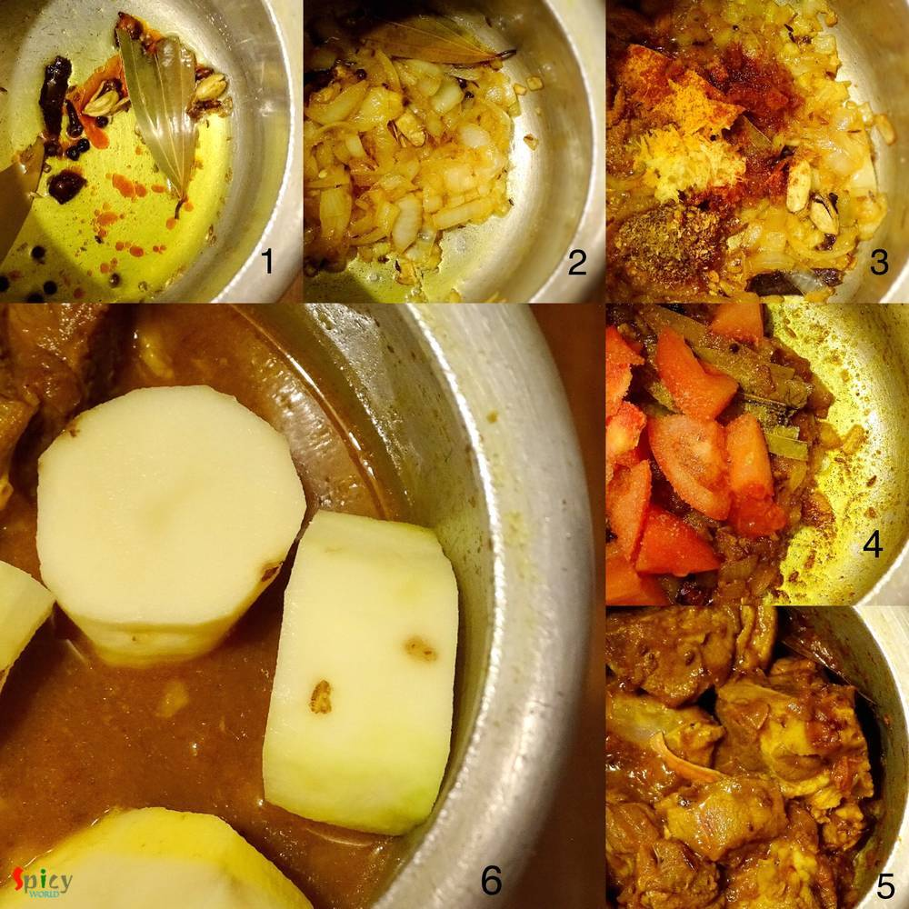
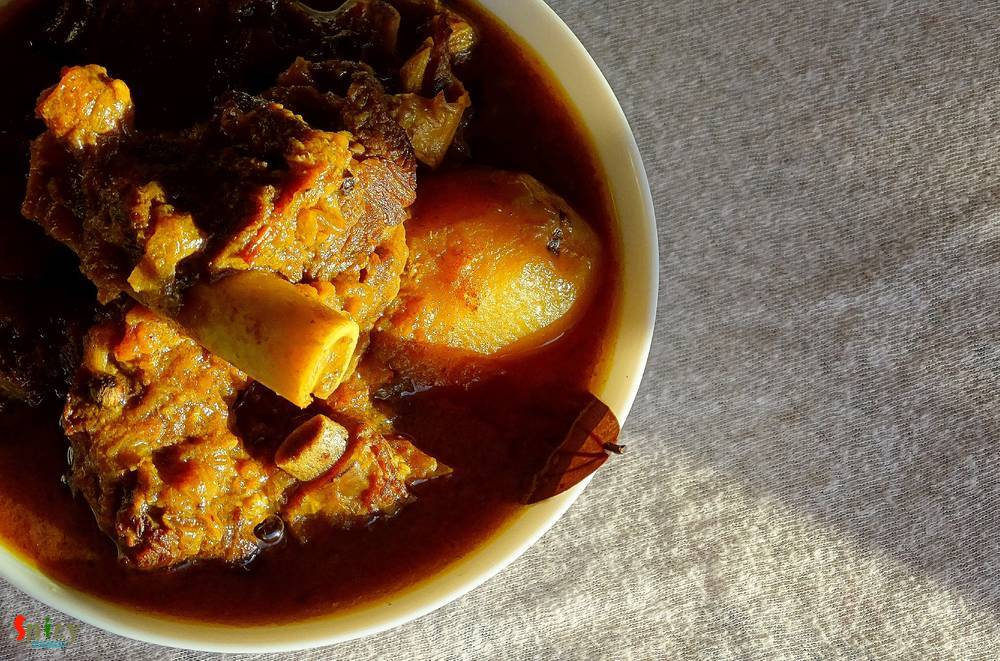

Simple and Easy Recipes
Sunday's Mutton Curry / Robibarer Mangshor Jhol / Mutton er Laal-Jhol
© 2016 Spicy World, Published on: Mar 4, 2015
Traditional Bengali lunch on sunday is this mutton curry along with plain rice, raw onion chunks and green chilies. After lunch we need a long nap (bhaat ghum). There was a say that we Bengalis can not eat food without potato. This is true. You have to add potatoes to this dish because there are many people like me and my husband who likes potatoes more than mutton pieces specially in this curry. As a Bengali its my pleasure to share this recipe with you. *Note: you must take that special bhaat ghum otherwise you will feel incomplete.

Ingredients
- Mutton 10 - 15 pieces.
- 2 big onions finely chopped.
- 1 Teaspoon of Ginger, garlic and green chilies paste.
- 1 tomato finely chopped.
- Whole spices (4 green cardemom, 4 cloves, 1 small cinnamon stick, 1 bay leaf, 5 whole black pepper)
- Spice powder (2 Teaspoons of turmeric, 1 Teaspoon of red chilli, 1 Teaspoon of cumin, 1 Teaspoon of coriander)
- Salt & sugar according to your taste.
- 1 Teaspoon of garam masala powder.
- 2 potatoes cut into halves.
- Mustard oil 3 - 4 Tablespoons.
- Warm water.


Steps
Take a pressure cooker. Heat the mustard oil.
Add 1 Teaspoon of sugar and caramalize it.
Then add all the whole spices into the oil.
Then add chopped onion. Fry it untill become golden brown.
Then add ginger + garlic + green chilies paste, garam masala powder and all the above mentioned spice powder. Cook this for 3 minutes.
Add the chopped tomato and some salt. Mix it and cook this for 5 minutes in slow flame.

Now add the washed and fresh mutton pieces. Mix this with the masala very well and cook this in slow flame for 15 minutes.
You will see mutton will release its own juice. You have to cook this mutton in its own juices for another 15 minutes.
Now add 2 cups of warm water, salt and potatoes. Stir this well and pressure this till everything becomes soft.

Your sunday's mutton curry is ready ....
Serve this hot with plain rice ....